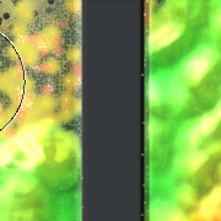
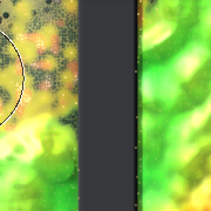

<title>Alarm Haze</title>
<meta name="claude:viewport-fit-sides" content="cover">
<link rel="stylesheet" href="https://fonts.googleapis.com/css2?family=Bricolage+Grotesque:opsz,wght@12..96,600;12..96,750&family=Source+Sans+3:wght@400;600&family=JetBrains+Mono:wght@400&display=swap">
<style>
/* Layout: one reading column; each scene's four clips in a 2x2 grid (one column on a phone), letter and counts under each */
:root{
  --bg:#f3f2ec; --panel:#e8e6dc; --fg:#1d211c; --muted:#5b6157;
  --accent:#4f8f7a; --soft:#d7e8df; --line:#cfccbf;
  --display:"Bricolage Grotesque", "Segoe UI", system-ui, sans-serif;
  --body:"Source Sans 3", "Segoe UI", system-ui, sans-serif;
  --mono:"JetBrains Mono", ui-monospace, Consolas, monospace;
}
@media (prefers-color-scheme: dark){:root:not([data-theme="light"]){
  --bg:#141812; --panel:#1d231b; --fg:#e7e9e1; --muted:#9aa294;
  --accent:#7cc4ab; --soft:#1f3229; --line:#2f382c; color-scheme:dark}}
:root[data-theme="dark"]{
  --bg:#141812; --panel:#1d231b; --fg:#e7e9e1; --muted:#9aa294;
  --accent:#7cc4ab; --soft:#1f3229; --line:#2f382c; color-scheme:dark}
body{background:var(--bg);color:var(--fg);font:17px/1.55 var(--body);margin:0;
  padding-left:max(16px,env(safe-area-inset-left,0px));padding-right:max(16px,env(safe-area-inset-right,0px));padding-block:28px 64px}
main{max-width:980px;margin:0 auto;display:flex;flex-direction:column;gap:30px}
h1,h2,h3{font-family:var(--display);text-wrap:balance;line-height:1.15;margin:0}
h1{font-size:2.3rem;font-weight:750}
h2{font-size:1.45rem;font-weight:750;border-top:2px solid var(--accent);padding-top:14px}
h3{font-size:1.08rem;font-weight:600}
p{margin:0}
section{display:flex;flex-direction:column;gap:14px}
.lede{color:var(--muted);font-size:1.02rem;max-width:760px}
.eyebrow{font:12px/1 var(--mono);letter-spacing:.08em;text-transform:uppercase;color:var(--accent)}
.prose{max-width:760px;display:flex;flex-direction:column;gap:12px}
code{font:0.86em var(--mono);background:var(--panel);padding:1px 4px;border-radius:3px}
.grid{display:grid;grid-template-columns:repeat(2,minmax(0,1fr));gap:16px}
@media (max-width:640px){.grid{grid-template-columns:minmax(0,1fr)}}
figure{margin:0;display:flex;flex-direction:column;gap:6px;min-width:0}
figure video,figure img{width:100%;height:auto;display:block;border-radius:6px;border:1px solid var(--line);background:#000}
figcaption{display:flex;align-items:baseline;gap:10px;flex-wrap:wrap;font-size:.92rem;color:var(--muted)}
.letter{font:750 1.35rem/1 var(--display);color:var(--fg);min-width:1.2em}
.counts{font:13px/1.4 var(--mono);color:var(--fg);font-variant-numeric:tabular-nums}
.ask{background:var(--soft);border-radius:8px;padding:16px 18px;max-width:760px;display:flex;flex-direction:column;gap:8px}
.pair{display:grid;grid-template-columns:repeat(2,minmax(0,1fr));gap:16px;max-width:760px}
@media (max-width:520px){.pair{grid-template-columns:minmax(0,1fr)}}
.tbl{overflow-x:auto;max-width:760px}
table{border-collapse:collapse;width:100%;font-size:.94rem}
th,td{text-align:left;padding:7px 8px;border-bottom:1px solid var(--line);vertical-align:top}
th{font-family:var(--display);font-weight:600}
td.num{font-variant-numeric:tabular-nums;text-align:right}
footer{font-size:.85rem;color:var(--muted);max-width:760px}
</style>
<main>
<header style="display:flex;flex-direction:column;gap:10px">
  <span class="eyebrow">Larder World · the alarm field · 2026-11-15</span>
  <h1>How strong should the alarm haze be?</h1>
  <p class="lede">When a hit lands or a siren calls, the game lays an alarm in the ground that the slime can sense. The view draws that field as a pale haze, brightest at its spreading edge. On the Swarmer's planet, where the alarm is on all game, the squad's fire washed the whole fight pale mint. Here are four strengths, played from the same game, so only the picture differs. Which one reads best?</p>
</header>

<section>
  <h2>A squad fighting the Swarmer</h2>
  <p class="prose">Planet 4, three seconds of fire at 39 to 42 s, at the game's own pace. Under each clip: how much the haze lifts the picture over the same frames with no haze (the mean, and the share of pixels lifted by more than 20 a colour channel).</p>
  <div class="grid">
    <figure><video src="img/p4clip-A.mp4" poster="img/p4clip-A.jpg" autoplay muted loop playsinline aria-label="Clip A, planet 4 fight"></video><figcaption><span class="letter">A</span><span class="counts">lift 0.8 · 0.5% of pixels</span></figcaption></figure>
    <figure><video src="img/p4clip-B.mp4" poster="img/p4clip-B.jpg" autoplay muted loop playsinline aria-label="Clip B, planet 4 fight"></video><figcaption><span class="letter">B</span><span class="counts">lift 6.3 · 0.0% of pixels</span></figcaption></figure>
    <figure><video src="img/p4clip-C.mp4" poster="img/p4clip-C.jpg" autoplay muted loop playsinline aria-label="Clip C, planet 4 fight"></video><figcaption><span class="letter">C</span><span class="counts">lift 15.5 · 12.5% of pixels</span></figcaption></figure>
    <figure><video src="img/p4clip-D.mp4" poster="img/p4clip-D.jpg" autoplay muted loop playsinline aria-label="Clip D, planet 4 fight"></video><figcaption><span class="letter">D</span><span class="counts">lift 57.6 · 27.7% of pixels</span></figcaption></figure>
  </div>
</section>

<section>
  <h2>A siren calling on bare ground</h2>
  <p class="prose">The Fork, a siren with nobody near, one call at 20 s, two seconds at the game's pace. The siren's lamp and horns flare red in every clip; the ring is the alarm it lays, spreading and fading. The letters are the same strengths as above.</p>
  <div class="grid">
    <figure><video src="img/siren-A.mp4" poster="img/siren-A.jpg" autoplay muted loop playsinline aria-label="Clip A, siren call"></video><figcaption><span class="letter">A</span><span class="counts">lift 0.0 · 0.0% of pixels</span></figcaption></figure>
    <figure><video src="img/siren-B.mp4" poster="img/siren-B.jpg" autoplay muted loop playsinline aria-label="Clip B, siren call"></video><figcaption><span class="letter">B</span><span class="counts">lift 2.5 · 0.0% of pixels</span></figcaption></figure>
    <figure><video src="img/siren-C.mp4" poster="img/siren-C.jpg" autoplay muted loop playsinline aria-label="Clip C, siren call"></video><figcaption><span class="letter">C</span><span class="counts">lift 6.3 · 1.1% of pixels</span></figcaption></figure>
    <figure><video src="img/siren-D.mp4" poster="img/siren-D.jpg" autoplay muted loop playsinline aria-label="Clip D, siren call"></video><figcaption><span class="letter">D</span><span class="counts">lift 25.1 · 11.6% of pixels</span></figcaption></figure>
  </div>
  <div class="ask">
    <h3>Your pick</h3>
    <p>Reply with a letter: the one you'd rather play. The build already plays one of the four, and switching to another is a one-line change.</p>
  </div>
</section>

<section>
  <h2>Fixed: the glow's square edge</h2>
  <p class="prose">The review saw a blast's glow end in a straight edge. The alarm field was right: it stops at walls, which hold none. The drawing mixed the wall's zero into the cell beside it, and the haze's edge term turned that drop into a bright line down every wall face. Now the drawing counts only open ground, so a wall face draws no edge. The Fork's stem wall under fire at 10 s, before and after:</p>
  <div class="pair">
    <figure><figcaption><span class="counts">Before: a pale line down each face</span></figcaption></figure>
    <figure><figcaption><span class="counts">After: none</span></figcaption></figure>
  </div>
  <div class="tbl">
    <table>
      <thead><tr><th>Brightness the haze adds to the ground (a test plateau against a wall)</th><th class="num" style="text-align:right">Mid-plateau</th><th class="num" style="text-align:right">½ cell from the wall</th><th class="num" style="text-align:right">⅕ cell</th></tr></thead>
      <tbody>
        <tr><td>Before</td><td class="num">58</td><td class="num">349</td><td class="num">345</td></tr>
        <tr><td>After</td><td class="num">58</td><td class="num">52</td><td class="num">42</td></tr>
      </tbody>
    </table>
  </div>
</section>

<footer>The view only: the game ran the same in every clip (planet 4 at 42 s: 52,556 walkers, 368 shots, 2,785 killed). Source and numbers: <code>Reports/alarm-look-2026-11-15/</code> in the repo.</footer>
</main>
